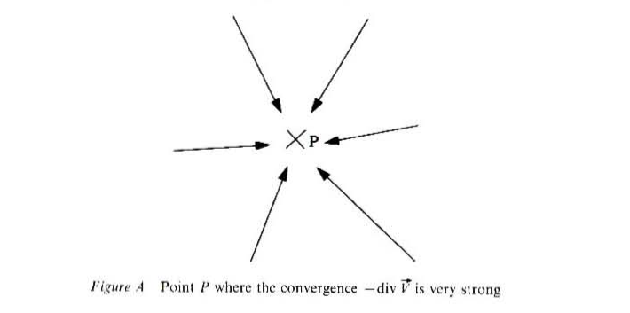
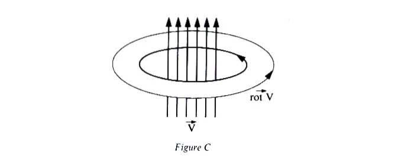
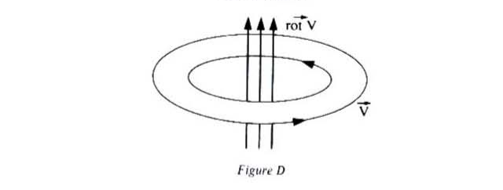

Figuring Space
Gilles Châtelet
Chapter 1: The Enchantment of the Virtual
Chapter 2: The Screen, the Spectrum and the Pendulum
Chapter 3: The Force of Ambiguity
Chapter 4: Grassmann's Capture of the Extension
Chapter 5: Electrogeometric Space
Appendix I: Note on Quaternions
Appendix II: Note on Hamilton’s Astronomical Example
Appendix III: Hamilton’s Operator \(\nabla\)
Appendix III: Hamilton’s Operator \(\nabla\)
Hamilton’s operator \(\nabla\) is defined by:
\[\nabla = \textbf{i}\frac{\partial f}{\partial x}+\textbf{j}\frac{\partial f}{\partial y} + \textbf{k}\frac{\partial f}{\partial z}\]
On the vectorial functions \(\vec{V}(x,y,z) = X\vec{\textbf{i}} + Y\vec{\textbf{j}} + Z\vec{\textbf{k}}\) , where \(X\), \(Y\), \(Z\) are the variable coordinates (depending on \(x\), \(y\), and \(z\)) of \(\vec{V}\), \(\nabla\) acts as follows:
\[\nabla\vec{V} = (-\text{div} \ \vec{V},\textbf{rot} \ \vec{V}) \] where \(\nabla\vec{V}\) is a quaternion (see decomposition (3) of Appendix I), and \(\text{div} \ \vec{V}\) the numerical function:
\[\frac{\partial X}{\partial x}+\frac{\partial Y}{\partial y} + \frac{\partial Z}{\partial z} \]
(it is the scalar part of the variable quaternion \(\nabla\vec{V}\)), and where \(\text{rot} \ \vec{V}\) is the vectorial function:
\[\nabla = \biggl\lparen \frac{\partial Z}{\partial y}-\frac{\partial Y}{\partial z} \biggr\rparen \textbf{i}+ \biggl\lparen \frac{\partial X}{\partial z}-\frac{\partial Z}{\partial X} \biggr\rparen \textbf{j} + \biggl\lparen \frac{\partial X}{\partial y}-\frac{\partial Y}{\partial X} \biggr\rparen \textbf{k}\] The expression ‘\(\text{div} \ \vec{V}\)’ is called ‘convergence’ by Maxwell; the expression ‘\(\text{rot}\ \vec{V}\)’ is called curl V by Maxwell.
If \(\vec{V}\) is conceived as a field of forces acting on particles, the divergence of \(\vec{V}\) at a point \(P\) measures the manner in which the field repels (or attracts) a particle in the vicinity of \(P\).
The rotational of \(\vec{V}\) (\(\text{rot}\ \vec{V}\)), also called the ‘curl’, describes the local rotatory motions of particles in the vicinity of \(P\).
Maxwell explains that ‘[the operator curl] represents the direction and the size of the rotation of the subject matter moved by the vector’ and he gives the following illustrations (see figs A and B).




Note that if \(\vec{V}\) is an axial vector (‘of the species of rotations), \(\text{rot} \ \vec{V}\) is a polar vector (’of the species of translations’) and vice versa. This justifies Maxwell in his assertion: ‘The Hamiltonian operator … applied to any vector function, converts it from translation to rotation, or from rotation to translation, according to the kind of vector to which it is applied’ (‘On the Mathematical Classification of Physical Quantities’, p. 265).
Examples:
If \(\vec{V} = (x^2 + y^2)\vec{\textbf{k}}\), the trajectories are straight lines parallel to \(0z\); \(\text{rot} \ \vec{V}\) is an axial vector, whose trajectories are circles embracing the aforementioned:
\[\text{rot} \ \vec{V} = 2y\vec{\textbf{i}} - 2x\vec{\textbf{j}} \] If \(\vec{V} = y\vec{\textbf{i}} - x\vec{\textbf{j}}\), \(\text{rot} \ \vec{V} = 2\vec{\textbf{k}}\), the rectilinear trajectories of \(\text{rot} \ \vec{V}\) are embraced by the trajectory-circles of \(\vec{V}\).